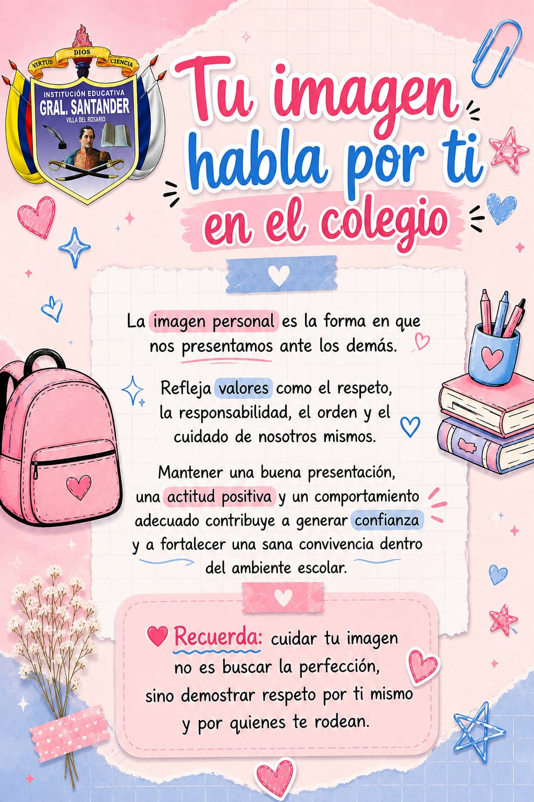

Nuestro Uniforme
"Tu imagen habla por ti"
En la Institución Educativa General Santander, el uniforme no es solo una norma: es la primera carta de presentación de cada estudiante. Por eso, nuestro proyecto busca acompañarte a comprender y aplicar correctamente el manual de convivencia, para que tu imagen refleje la disciplina, el respeto y la identidad que representa nuestro colegio.
Uniforme de Diario
Tu imagen de cada día refleja tu disciplina y respeto por el colegio.
👩 Para Damas
- Prendas: Falda a cuadros (el largo correcto es a la mitad de la rodilla) y camibuso blanco con el escudo oficial de la Institución Educativa.
- Accesorios: Correa roja y medias blancas tradicionales a media pierna (no se permiten tobilleras ni taloneras).
- Calzado: Zapatos de cuero rojos con correa.
👨 Para Caballeros
- Prendas: Pantalón gris de bota recta clásica (mínimo de 18 cm de bota, no entubado) y camibuso blanco con el escudo de la institución, manga corta, el cual debe portarse obligatoriamente por dentro del pantalón.
- Accesorios: Correa negra lisa (sin adornos ni hebillas exageradas) y medias blancas tradicionales a media pierna (no tobilleras).
- Calzado: Zapatos escolares negros de cuero con cordones.

Uniforme de Gala
La máxima expresión de orgullo y elegancia en nuestras ceremonias institucionales.
El uniforme de gala está destinado de manera exclusiva para actos de comunidad especiales, izadas de bandera, conmemoraciones y eventos oficiales de la institución.
👩 Para Damas
- Prendas: Camisa de gala blanca de manga larga, corbatín elaborado en la misma tela de la falda, y falda a cuadros institucional (a la mitad de la rodilla).
- Accesorios: Medias blancas a media pierna y correa roja.
- Calzado: Zapatos de cuero rojos con correa.
👨 Para Caballeros
- Prendas: Camisa de gala blanca de manga larga, corbata del mismo color gris del pantalón y pantalón gris de bota recta clásica.
- Accesorios: Correa negra de cuero tradicional y medias blancas escolares (media pierna).
- Calzado: Zapatos de cuero negros con cordones.

Uniforme de Educación Física
Comodidad y presentación impecable para el desarrollo deportivo y técnico.
Este uniforme se debe portar completo los días asignados en el horario de clases de educación física, así como en las jornadas de contrajornada de la media técnica o el servicio social (jean sin rotos y zapatos cerrados también aplican bajo reglas específicas del servicio).
🎽 Para Damas y Caballeros
- Prendas Principales: Sudadera azul de bota recta (no entubada), camisilla blanca con el nombre de la institución y camibuso deportivo con vivos de color azul, amarillo y blanco.
- Prendas Deportivas: Pantaloneta azul (utilizada para las prácticas deportivas).
- Accesorios Específicos: Medias blancas escolares a media pierna (está estrictamente prohibido el uso de tobilleras o taloneras).
- Detalle para Damas: Balaca de color blanco para mantener el cabello recogido y ordenado durante las actividades.
- Calzado: Tenis completamente blancos, elaborados en cuero deportivo escolar.